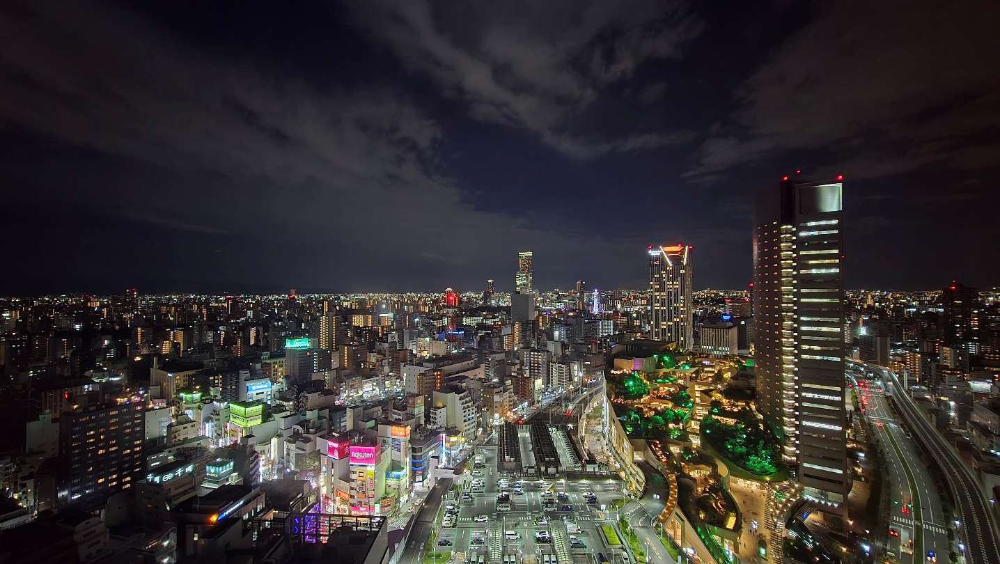
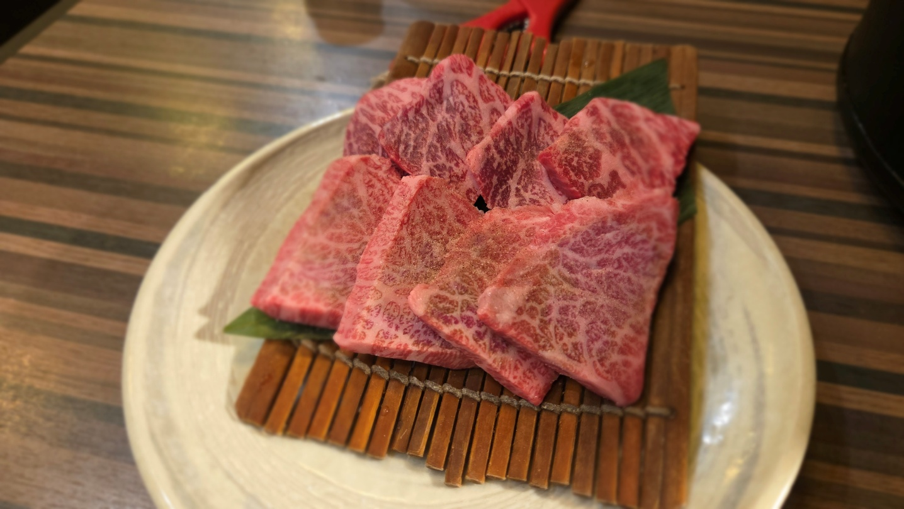

Z cest
Japonsko a Korea za čtrnáct dní
Klasická trasa: Tokio — Kanazawa — Kjóto — Ósaka, a na zpáteční cestě den v Soulu. První polovina července 2026, čtrnáct dní.
Předesílám jednu věc, ať víte, odkud mluvím. Mám za sebou něco přes padesát navštívených zemí a nikdy jsem nebyl z první návštěvy tak nadšený jako z Japonska.
Letenka
Praha — Soul — Tokio, zpátky Ósaka — Soul — Praha, Korean Air.
Přibližné minimální náklady na letenku: 23 500 Kč.
Doprava na letiště
Z Hlavního nádraží v Praze vřele doporučuju městskou dopravu za zhruba padesát korun místo letištního busu za dvě stovky na osobu. I Bolt vyjde ve dvou skoro stejně jako ten bus.
Salonky
Praha. Využili jsme Visa lounge před bezpečnostní kontrolou na T2, i když jsme odlétali z T1 — nebyl s tím problém, byli jsme tam asi pět hodin před odletem a nabídka byla v pořádku. Pak jsme se přesunuli na T1 do Erste Premiere lounge, taky dobré. Upozornění: bezpečnostní kontrola pro náš let byla přímo u gatu, ale nezdrželo to.
Soul, tři hodiny přestup. Salonky jsou podle recenzí podobné, byli jsme ve Sky Hub Lounge — dostatečný výběr jídla i pití. Při cestě zpět malá fronta, jinak v pohodě.
Data a e-SIM
Koupili jsme e-SIM přes Airalo. Japonsko je jedna z mála zemí, kde není velký rozdíl mezi kartou koupenou na letišti a e-SIM pořízenou z domova — takže si vyberte, co je vám pohodlnější.
Ubytování
Japonsko bylo překvapivě levné. Komfort Evropy skoro za cenu Asie.
Mám status Gold u Accoru včetně asijského Exploreru, kde jsou dvě noci ročně zdarma systémem jedna plus jedna. Průměrná cena za hotel vyšla kolem 2 000 Kč za noc za pokoj pro dva.
Tokio — ibis Styles Tokyo Ginza East, zhruba 3 000 Kč za noc. Velmi klidná čtvrť, v lázních (onsen) jsem byl pokaždé sám, dobrá dostupnost po celém Tokiu. Volil bych znovu.
Kanazawa — Hotel Intergate Kanazawa, 1 600 Kč za noc se snídaní. Naprosto skvělá volba. Výborné místo a celý den k dispozici lounge s čajem, kávou, džusy a malým občerstvením. Večer dvě hodiny víno a prosecco. K tomu onsen zdarma.
Kjóto — ibis Styles Kyoto Shijo, 800 Kč za noc se snídaní na velmi dobrém místě. Pokoj malinký, ale za tu cenu se nedá nic vytknout.
Ósaka — Swissôtel Nankai. Využil jsem benefit nocí zdarma — byli jsme čtyři noci a platili dvě. Perfektní místo, pokoj ve dvaatřicátém patře, 12 000 Kč za celý pobyt. Bomba. V hotelu i i lounge (ten jsme si připlatili na 2 večery).

Výhled z pokoje v Ósace

Místní doprava
Naprosté překvapení celé cesty.
Jízda metrem stojí kolem pětadvaceti korun, ale hlavní je přehlednost. Otevřete si Google Maps, zadáte odkud kam, a dostanete: kterým vchodem do metra, na jakou linku, do kterého vozu nastoupit — vlak má klidně dvě stě metrů — a kterým východem vyjít. Všechno v metru značeno i anglicky a velmi přehledně.
Připadal jsem si, jako bych v Tokiu žil dvacet let. A všude je spousta zaměstnanců, kteří velmi ochotně poradí.
Kupte si kartu Suica. V Tokiu nebo obdobnou jinde, platí v celém Japonsku. Na letišti v Tokiu ji koupíte i kartou a nabijete na požadovanou částku. Platí se s ní i v obchodech a některých restauracích. V dopravě ji přiložíte při vstupu i při výstupu.
Peníze
Skoro všude se platí kartou. Kde to nešlo, dalo se platit Suicou.
Výběr z bankomatu stojí pár korun. Když jsem vybíral deset tisíc jenů a pak dvacet, byl mezi poplatky malý rozdíl — ale od dvaceti tisíc výš už byl poplatek stejný, takže se vyplatí vybírat větší částky.
Chrámy měly často vstupné jen v hotovosti, ale bylo to do padesáti korun. A nabití Suicy vyžadovalo hotovost.
Program po dnech
1. den — Tokio
Přílet na Narita. Čtvrť Yurakucho a „gado-shita", uličky pod viadukty. Izakaya Andy’s Shin Hinomoto.
Z hotelu do Yurakucho je to pěšky patnáct minut přes Ginzu.
2. den — Tokio
Tsukiji Outer Market — stánky Onigiri Maritoyo a Shou Tamagoyaki. Čtvrť Asakusa s chrámem Senso-ji a bránou Kaminarimon. Park Ueno.
Z hotelu na Tsukiji pěšky deset minut.
3. den — Tokio
Svatyně Meiji Jingu, ulice Takeshita-dori v Harajuku, Shibuya Crossing.
Shibuya Sky bývá často vyprodaná. V budově je ale kavárna s pěkným výhledem na křižovatku a velmi přijatelnými cenami.
A hlavně: vyhlídka Tokijské metropolitní vlády (Tochō) je zdarma a otevřená i o víkendu. Jsou tam dvě věže, z každé je vidět na jinou část města. Rozhodně doporučuju.
Čtvrť Shinjuku.
Z hotelu na Meiji Jingu metrem asi třicet minut, linka Ginza s přestupem na Chiyodu, stanice Meiji-Jingumae.
4. den — Tokio
Východní zahrady Císařského paláce na místě hradu Edo. Čtvrť Akihabara. Ginza a její nedělní pěší zóna Hokosha Tengoku.
5. den — Kanazawa
Šinkansenem z Tokia. Čtvrť Higashi Chaya a zmrzlina ve zlaté fólii.
6. den — Kanazawa a přesun do Kjóta
Tržnice Omicho Market a kaisendon. Zahrada Kenroku-en. Čtvrť Nagamachi a sídlo Nomura-ke.
Z hotelu na tržnici pěšky patnáct minut.
7. den — Kjóto
Svatyně Fushimi Inari Taisha s tisíci bránami torii. Byli jsme tam po šesté ráno a bylo tam jen pár lidí, a to až nahoře na kopci. Rozhodně doporučuju přivstat si.
Chrám Kiyomizu-dera, uličky Sannenzaka a Ninenzaka, čtvrť Gion a chrám Yasaka.
Z hotelu je to celkem patnáct minut: metrem linka Karasuma na Kyoto Station a odtud JR Nara Line na Fushimi Inari.
8. den — Nara a Uji
Nara Park a jeleni sika.
Chrám Todai-ji s bronzovým Buddhou. Tohle je nutné vidět osobně — chrám je fakt obrovský a žádné video ani fotka ten zážitek nenahradí.
Z hotelu asi padesát minut: metrem na Kyoto Station a odtud JR Nara Line, spoj Miyakoji Rapid.
9. den — Kjóto a přesun do Ósaky
Bambusový háj Arashiyama — počítejte s půlhodinou, víc to nezabere. Chrám Tenryu-ji.
Odpoledne siesta v klimatizovaném hotelu, šetření sil na večer. Nishiki Market — Nishiki Gyoza, Meat Shop Hiro.
10. den — Ósaka
Ósacký hrad. Čtvrť Shinsekai s věží Tsutenkaku — krásné večer, vyzkoušejte yakiniku. Izakaya Toyo v Kyobashi. Dotonbori a Glico Man, taky nejlepší po setmění. Okonomiyaki v Mizuno nebo Ajinoya.
11. den — Ósaka
Pasáže Shinsaibashi-suji. Obchody Daiso a Don Quijote. V Umedě stánek Hanadako s takoyaki negi-mayo.
12. den — Ósaka
Okolí Namby a Shinsaibashi, suvenýrový finiš. Namba Parks s vnitřním deštným pralesem jako záloha pro déšť. Večer znovu Dotonbori.
Zvážit místo toho výlet vlakem do Himedži.
13. den — Soul
Palác Changdeokgung na seznamu UNESCO. Bukchon Hanok Village. Čtvrť Myeongdong a Olive Young. Myeongdong Kyoja — mandu a kalguksu.
Z letiště Incheon T2 vlakem AREX na Seoul Station, asi pětašedesát minut, pak metro linka 3 na stanici Anguk.
14. den — odlet
Letiště Incheon T2, Matina Lounge nebo Sky Hub Lounge. Hotel ibis Styles Ambassador je přímo v budově letiště, takže na terminál pěšky.
Restaurace
Tuhle část ještě doplním — musím si projít, kde jsme přesně byli.
Postřehy
Velmi čistá a turisticky přívětivá země. Luxusní a čisté záchody na každém rohu a zdarma.
Ceny jsou příznivé. Hotová jídla v každé večerce a v supermarketu typu Life mají neskutečný výběr a stojí padesát až osmdesát korun.
Ryby. Nikdy jsem neměl tak kvalitní čerstvé a syrové ryby, ujížděli jsme na nich. Určitě zkuste jejich ústřice, je to úplně něco jiného než v Evropě.
A nejvíc je wagyu. Pokud budete mít k dispozici kuchyň, je to úplná pecka — v supermarketu za pár korun, a večer navíc velké slevy. Na trzích to vyjde dráž. Jinak si najděte dobré yakiniku; nejlepší poměr ceny a výkonu byl v Ósace.
Chlazené zelené čaje v každém marketu za pár korun, neslazené a výborné.
Tip do 7-Eleven: dejte si mražené smoothie. Je v mrazicím boxu v kelímku a za pokladnou je automat, který vám to dodělá.
A k jazyku: hodně se píše, že se anglicky nedomluvíte. Zhruba v osmdesáti procentech případů s tím nebyl vůbec žádný problém.